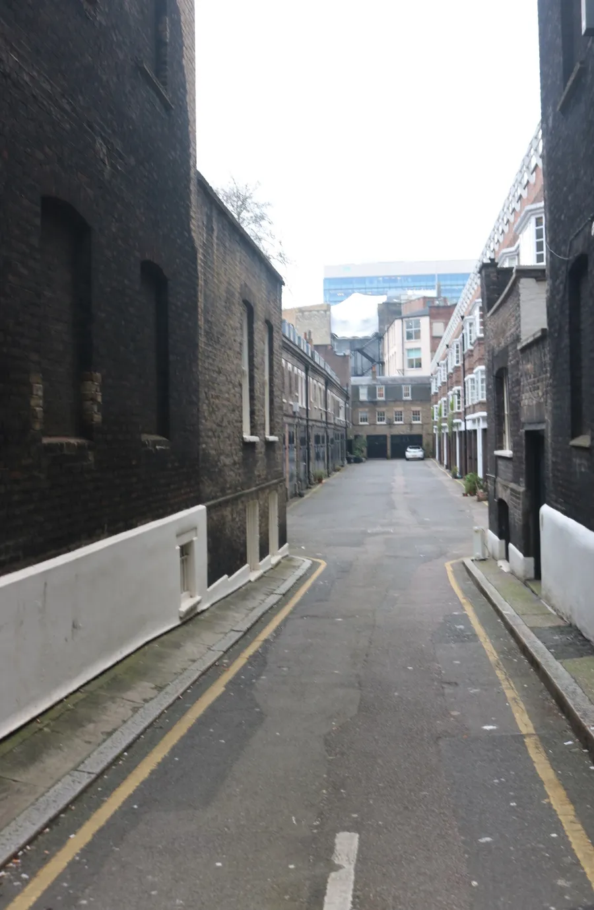
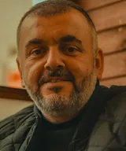

Eight doors,one lane.
A small language school on Gower Mews in Bloomsbury. Pick a door, try a free lesson, start speaking.

You start speaking in the first minute. Eight languages, small groups, ten weeks at a time.

Pick a door
Hola
Spanish (Español). The language of 20 countries, taught through conversation.
Marta Solís
From Madrid, 12 years teaching
Bonjour
French (Français). Elegance, culture and a language of diplomacy.
Camille Roche
From Lyon, 9 years teaching
Hallo
German (Deutsch). Precise, practical and great for your career.
Jonas Weber
From Hamburg, 14 years teaching
Ciao
Italian (Italiano). La dolce vita, one conversation at a time.
Giulia Ferri
From Bologna, 8 years teaching
Olá
Portuguese (Português). Brazilian and European, from the beach to the boardroom.
Ana Lima
From São Paulo, 7 years teaching
こんにちは
Japanese (日本語). From hiragana to conversation with confidence.
Yuki Tanaka
From Osaka, 10 years teaching
你好
Mandarin (普通话). The world’s most spoken language, made approachable.
Wei Chen
From Chengdu, 11 years teaching
مرحبا
Arabic (العربية). Modern Standard Arabic and everyday dialects.
Omar Haddad
From Beirut, 13 years teaching
How a course runs
From your first question to your first conversation, in four steps. Open one to read it.
Take the free five-minute test. It places you at A1, A2, B1 or B2, so you never sit in a class that is too easy or too hard.
Take the level testJoin a real class for thirty minutes, free. Meet your teacher, hear the pace and decide with no obligation.
Book a free lessonOne level per course, A1 to B2, with a plan for every week. Evenings, lunchtimes and weekends, in the studio or online.
See the coursesMove up a level, join the next course or book private lessons. Your teacher tells you what comes next.
Enrol
Your teachers
8 teachers
- Ana LimaFrom São Paulo. Portuguese and Spanish.7 years
- Camille RocheFrom Lyon. French.9 years
- Giulia FerriFrom Bologna. Italian.8 years

Jonas WeberFrom Hamburg. German.14 years- Marta SolísFrom Madrid. Spanish.12 years
- Omar HaddadFrom Beirut. Arabic.13 years
- Wei ChenFrom Chengdu. Mandarin.11 years
- Yuki TanakaFrom Osaka. Japanese.10 years
Questions
No. Our A1 courses start from zero. If you have studied before, take the free level test and we will place you in the right group.
Both. Every course runs in our London studio and live online, and you can switch between them week to week.
Every lesson is recorded for you to catch up, and your teacher will send a short summary of what you missed.
Yes. Your first lesson is free: if you do not love it, we refund the course in full.
Yes, we prepare students for DELE, DELF, Goethe, JLPT, HSK and more, as part of the course.
Book a free lesson
Thirty minutes in a real class with a real teacher. No card and no obligation.